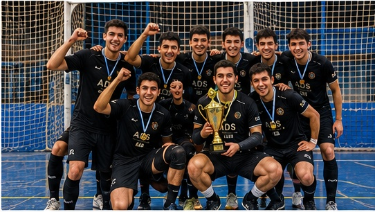
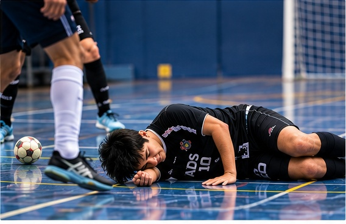
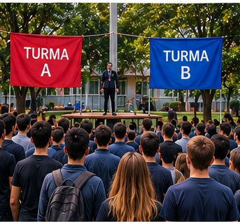
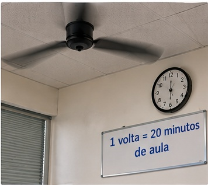

Time de futsal do segundo semestre de ADS é campeão do interclasse de ADS
Com uma virada histórica de 5 X 4, o time do segundo semestre é campeão do interclasse em cime do primeiro semestre
há 2 dias

Durante Amistoso, um dos jogadores de time de futsal se espatifa no chão de maneira vergonhosa, mas está bem e não sobreu lesões.
há 5 horas

Com uma virada histórica de 5 X 4, o time do segundo semestre é campeão do interclasse em cime do primeiro semestre
há 2 dias
O professor aprovou a mudança de conteúdo. O bolo ficou bom.
há 5 dias
Ele evita compartilhar o segredo, mas já foi denunciado por um colega que viu a tela.
há 2 dias
Os outros 13% mentiram na pesquisa. Os dados foram publicados em uma revista científica que ninguém conhece.
há 3 dias

O conflito envolve conforto uma disputa por umlugar no mini palco. A ONU dos estudantes foi convocada.
há 3 dias

Uma volta completa equivale a 20 minutos de aula. Os alunos já sabem quando falta pouco para acabar.
há 3 dias